Start at Rossio
Praça da República is a useful starting point. Take in the surrounding buildings before entering the old town. This walk starts in the city; allow additional time to travel from the hotel.
Explore the region · Hotel Onix
From cobbled streets to granite villages, from the gardens of the Dão to mountain paths. Six itineraries to help plan your day out.
Durations are suggestions, not guaranteed times. Ask reception about current conditions, access and opening hours before setting off.
Itinerary 01 · 2–3 hours · urban walk
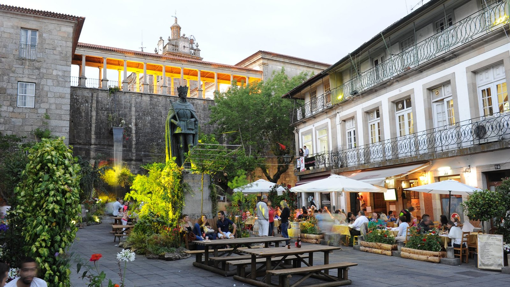
Praça da República is a useful starting point. Take in the surrounding buildings before entering the old town. This walk starts in the city; allow additional time to travel from the hotel.
Walk up Rua Direita at a relaxed pace. In the Adro da Sé, take time to appreciate the cathedral, the Misericórdia church and the surrounding streets, beyond a quick photograph. Cobbles and slopes call for comfortable shoes.
The Museu Nacional Grão Vasco adds a cultural visit to the walk. Allow extra time for the interior rather than squeezing it into the suggested 2–3 hours. On the way back, Parque Aquilino Ribeiro offers a green space for a break.
With children, alternate short visits and garden breaks. In rain, focus on the museum and a meal. For limited mobility, avoid steep streets where possible and ask reception about access to interiors.
Itinerary 02 · Full day · by car
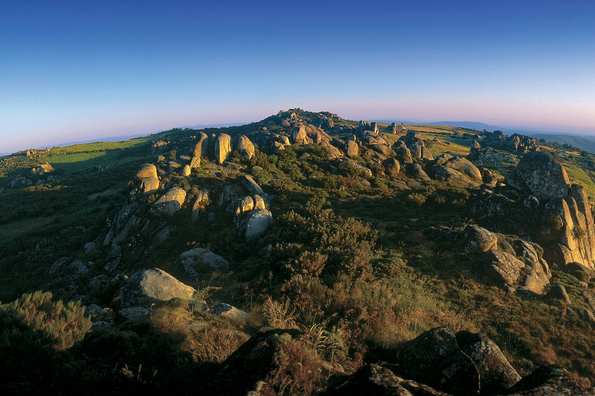
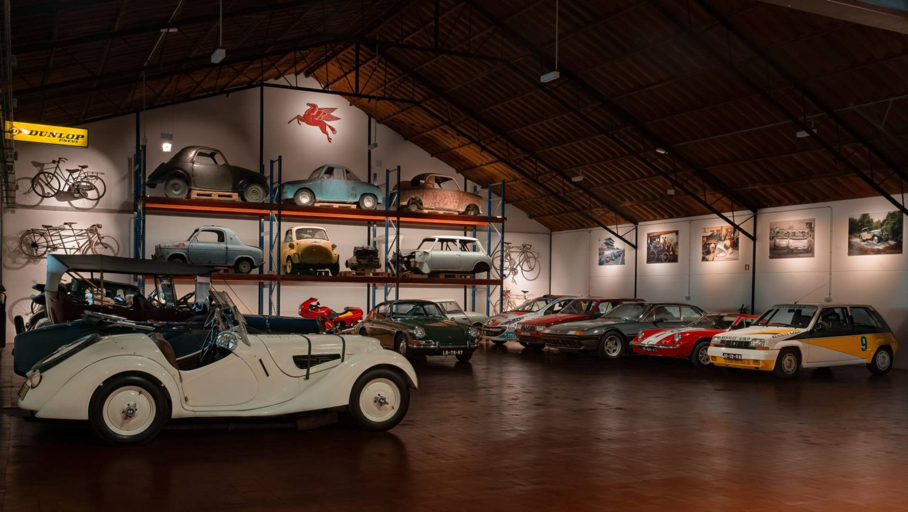
Start in Caramulo village and visit the Museu do Caramulo. Art and cars offer something for different interests within the same group. The Caramulo Experience Center is a separate venue: do not assume its activities or visits are included in the same programme.
Allow time for lunch before heading into the mountains. Avoid making the day a succession of drives; leave time to enjoy the village and its surroundings between visits.
Caramulinho can be an afternoon destination if visibility and conditions are favourable. The final ascent involves walking and steps, so it is not accessible to everyone. For less exertion, choose panoramic stops reachable by car.
In fog or rain, keep the cultural visits and shorten the mountain drive. Bring an extra layer even when Viseu is warm. Park only in suitable places and never stop on bends to take photographs.
Itinerary 03 · Full day · road trip
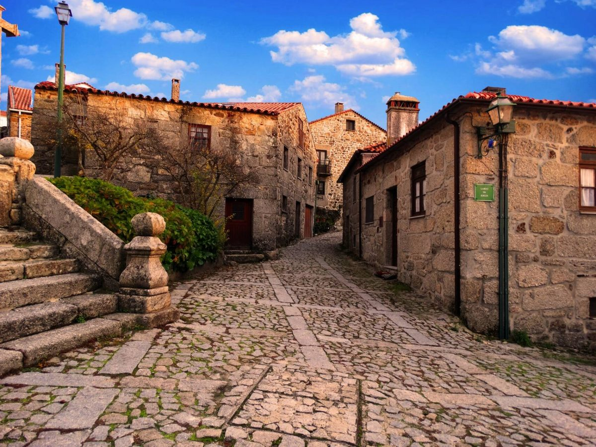
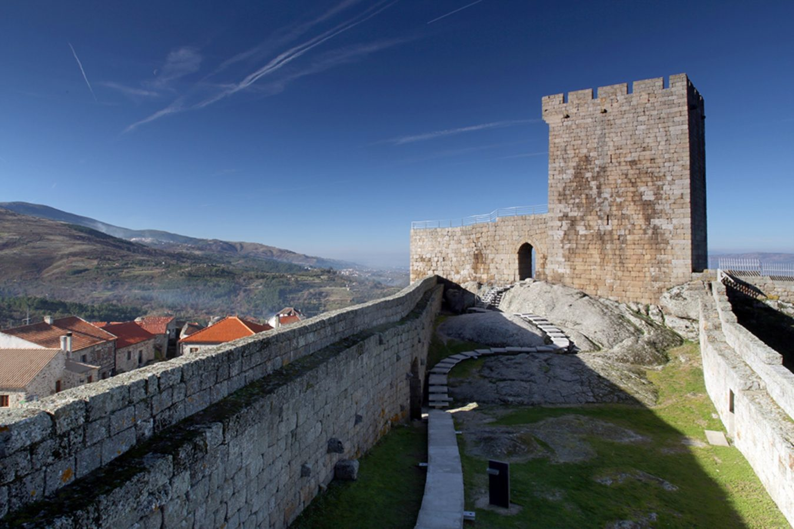
Make Linhares da Beira the focus of this outing. Celorico da Beira can complete the day; keep Trancoso as an alternative or a separate trip. This sequence is a hotel suggestion, not an officially signposted route.
Leave the car in a designated parking area and explore the village on foot. Follow the stone streets, look at the houses and walk up to the castle. Relating the village to its defensive position and surrounding landscape makes the visit more rewarding.
Allow a substantial part of the visit for the castle exterior and views. Take care on walls, stairs and uneven ground. Supervise children closely; visitors with limited mobility should assess the route before starting the ascent.
After lunch, choose Celorico for another heritage stop or return to the hotel with time to spare. Plan Trancoso as its own outing around the walled town rather than trying to fit every village into one day.
Itinerary 04 · Full day · car and short walks
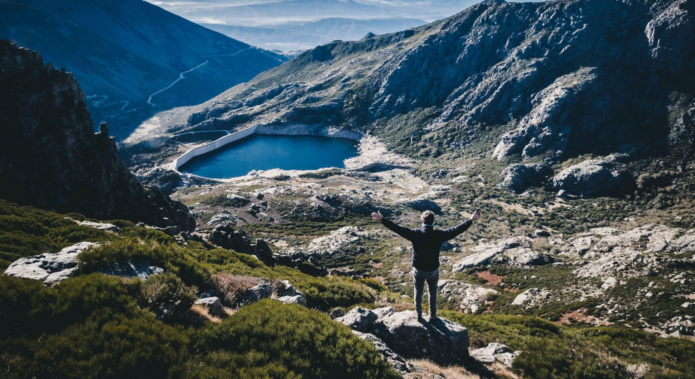
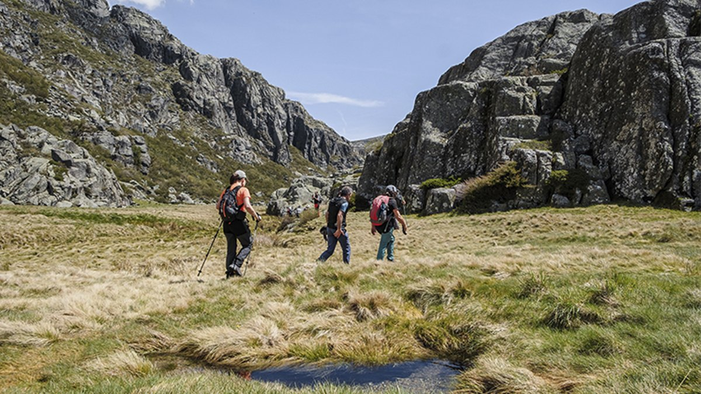
Plan around Seia and Sabugueiro or around Manteigas. Do not try to combine every side of the mountain, village and viewpoint in a single day. Torre can be one stop without being the only objective.
Use Seia as your first reference point on the approach to the mountains. Continue to Sabugueiro if conditions allow, breaking up the drive with short walks. Leave time for the architecture and landscape without depending on fixed-time activities.
On another day, Manteigas and the Zêzere valley offer a different outing. Stop in designated areas and choose walks suited to your group. Do not improvise a mountain walking route from a photograph.
Snow is not guaranteed. Roads may be restricted in winter; in summer, take water and sun protection. Check conditions on the day. In strong wind, fog or ice, stay lower down and keep an alternative plan in the villages.
Itinerary 05 · 2 hours to a full day · walking or cycling
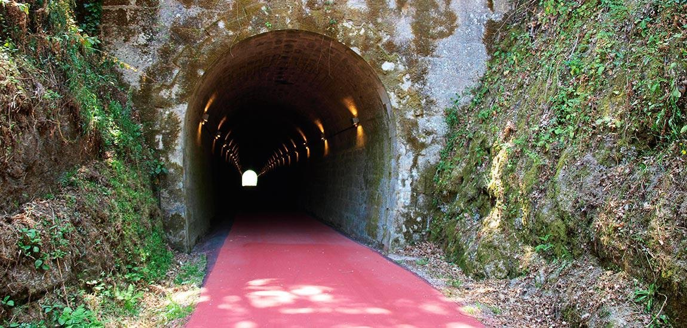
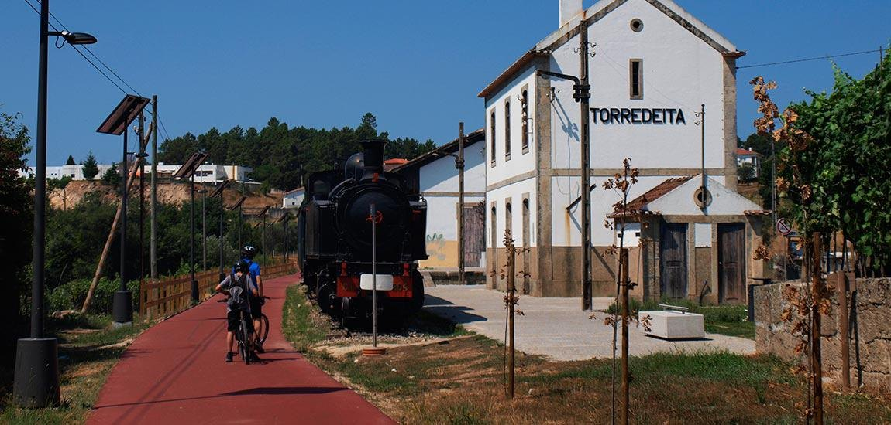
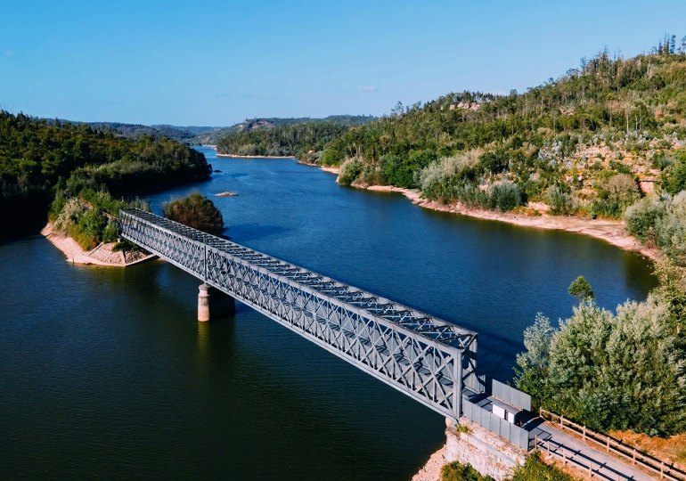
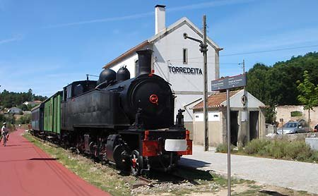
The former railway route links Viseu and Santa Comba Dão over approximately 50 km. There is no need to cover it all. For a first visit, choose an entry point and a time limit for turning back.
On foot, walk for 30–45 minutes and return the same way. By bicycle, adapt the distance to everyone’s experience. Torredeita can be a useful reference for choosing a section; check access and parking before setting off.
The Santa Comba Dão area offers a different experience, with water and bridges. Ponte do Granjal is one of the points of interest. This is an alternative to the Viseu section, not a nearby extra stop on a short walk.
The route is linear. A one-way trip requires return transport arranged in advance. Take water, equipment in good condition and enough time to finish in daylight. Share the path with walkers, keep your speed down and take care at crossings.
Itinerary 06 · Half or full day · by car
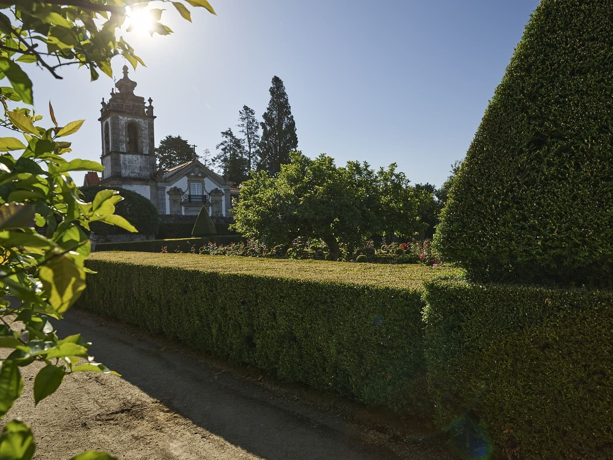
Spend the morning exploring the village and its architectural heritage from the outside. The relationship between houses, gardens and vineyards is part of the appeal, beyond wine tasting alone.
Do not assume gardens and estates are freely accessible. Visits depend on the programme available. If an interior visit is not possible, keep the village walk and adjust the length of your outing.
To extend the day, choose one wine estate experience in the region. The Rota dos Vinhos do Dão brings together several producers; it is not one continuous route to travel from end to end.
With children or non-drinkers, focus on heritage and landscape. If tasting wine, arrange transport and a driver who will not drink. The hotel can help with planning without relying on external contact details printed in this guide.
Santar · gardens and heritage · Source
Linhares da Beira · historic village · Source
Linhares da Beira · castle and landscape · Source
Caramulo · granite landscape · Source
Caramulo Experience Center · Source
Serra da Estrela · mountain horizon · Source
Estrela · paths among rocks · Source
Viseu · historic centre · Source
Ecopista do Dão · the former railway · Source
Ecopista do Dão · through the landscape · Source
Ecopista do Dão · Ponte do Granjal · Source
Torredeita · a stop along the way · Source
Images supplied by reference by the user. Confirm republication rights with their owners before publishing.
{kind=link}
{kind=link}
{kind=link}
{kind=link}
{kind=link}
{kind=link}
{kind=link}
{kind=link}
{kind=link}
{kind=link}
{kind=link}
{kind=link}